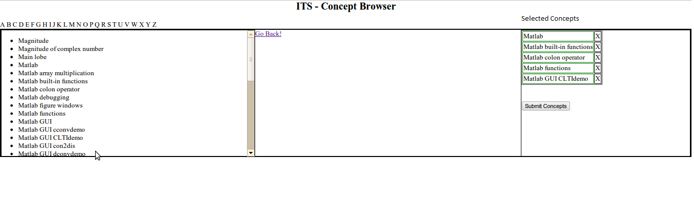
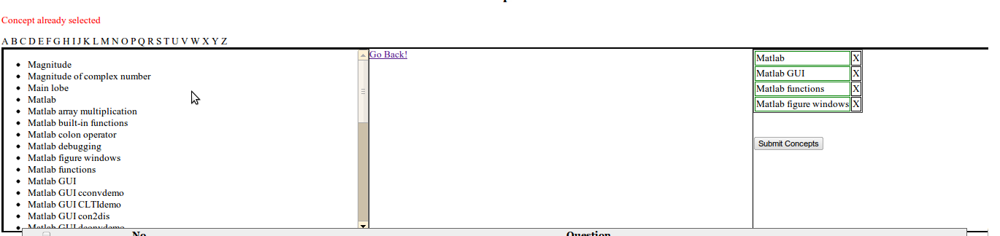
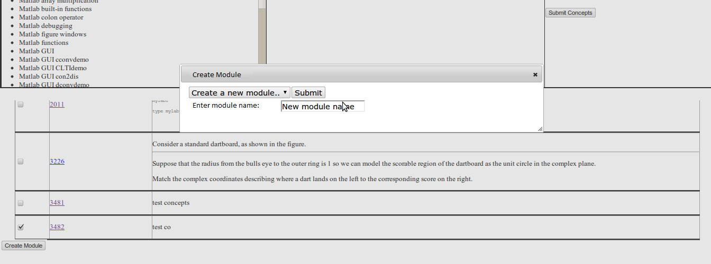
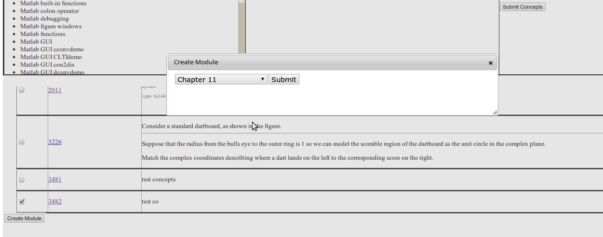
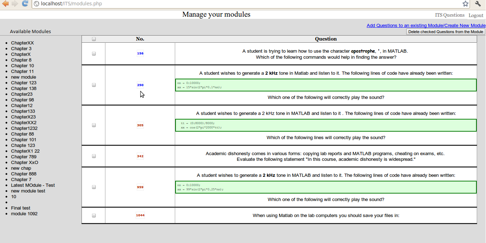
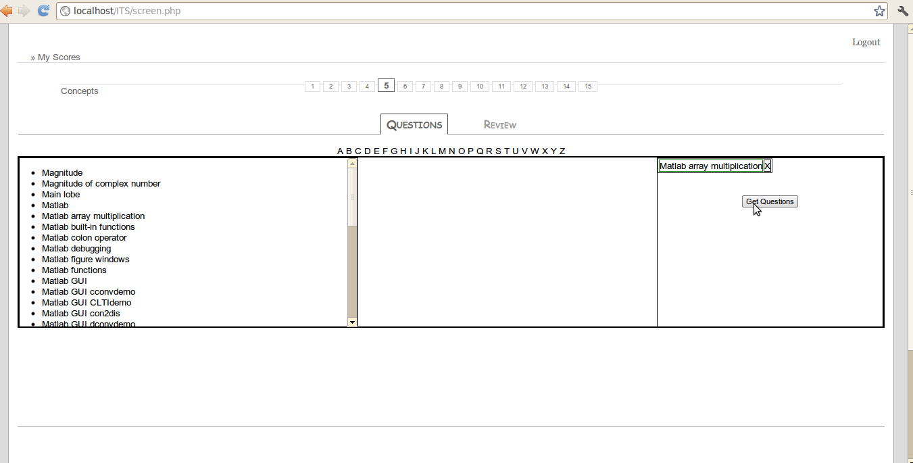
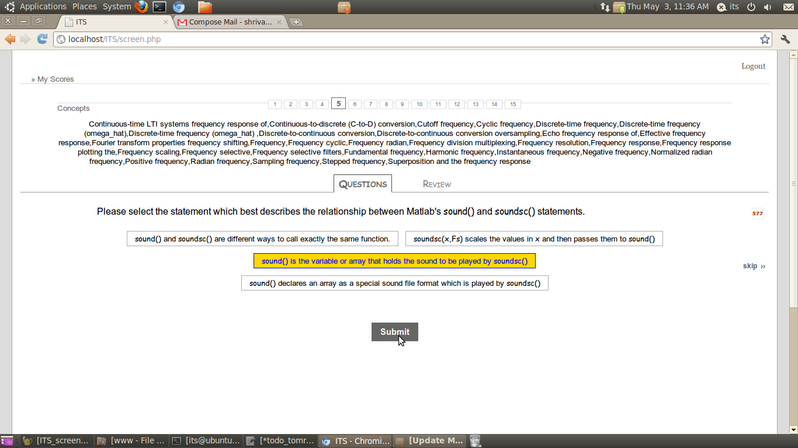

Concept based interface for ITS
This
interface provides a medium to a user to look at the concepts available and a way to utilize those
concepts.
Concept based interface lists all concepts alphabetically. A user can traverse through these
concepts by clicking on one letter at one time. When user clicks on a concept on left, it gets
selected and is moved on the right side.

Various JavaScript checks have been enabled to prevent propagation of human error through the
system, for instance making sure that duplicate concepts are not selected by a user.

User can any time delete a selected concept using a ‘X’ button beside the concepts.
1. In administrator's Mode:
When concepts are chosen from the interface and are submitted, all questions are displayed in a
tabular style. This gives a preview of all questions to the user in a manageable manner. User can
select all questions or can select a few of those to be added to a module. User can also click on
the question id of these questions to browse through in detail. User can create a new module with
these questions or add this question to an existing module.
New module creation:

Adding question to an existing module:

An admin is provided with a link in ITS to a module management page. Module management
page provides following features:
a. View List of existing modules
b. View Questions in a module in a tabular fashion by clicking on that module name on left.
c. Delete questions from an existing module by checking the check boxes beside each question
in the table and clicking the delete button on top right.
d. Navigate to the concept based interface to create a new module or augment an existing
module.

2. In Student's Mode:
a. A student will first have the option of selecting the concept view instead of the
regular module view.
b. Concept view displays the same concept based interface as explained above for
viewing concepts available in the system.
c. Student can select few of these concepts to practice.

d. Student will be taken to the temporary created module where all questions belong to
the selected concepts.
e. Students will be able to take the questions just the way they currently attempt in ITS.
They will be able to skip through the questions, and see their score. This score
although will not be saved into their history as the purpose of this module is just
practice.
f. All tags associated with the current question are displayed on top of the question
when the student is attempting the question.

Changes made to the database:
To accomplish these, three new tables were created
1. Module – This table contains information about each module like name, id
2. Module_tag – This table contains mapping between modules and the tags associated with
it.
3. Module_question – This table contains mapping between a module and a question.
Database tables have been designed in a way such that module_tags and module_questions have
a foreign referential key with module and question table. This will enable cascading delete
functionality, so that no orphan entries remain in Module_tag or Module_question table when the
corresponding entry is deleted from the Module table or the question table. Also, ‘insert ignore’
query has been used in the code that will ensure that duplicate questions will never be added in
the same module.
Appendix:
Database table creation queries:
CREATE TABLE module (
mid int(11) NOT NULL AUTO_INCREMENT, title varchar(64) NOT NULL DISTINCT,
PRIMARY KEY (mid), UNIQUE KEY id (mid)
);
CREATE TABLE module_tag (
id int(11) NOT NULL AUTO_INCREMENT, mid int(11) NOT NULL , tag_id int(11) , PRIMARY KEY (id),
UNIQUE KEY id (id), CONSTRAINT `mod_tag_idfk_1` FOREIGN KEY (`mid`) REFERENCES `module` (`mid`) ON DELETE CASCADE,
CONSTRAINT `mod_tag_idfk_2` FOREIGN KEY (`tag_id`) REFERENCES `index_1` (`tag_id`), CONSTRAINT uc_midqid UNIQUE (mid,tag_id)
);
CREATE TABLE module_question (
id int(11) NOT NULL AUTO_INCREMENT, mid int(11) NOT NULL , qid int(11) NOT NULL , PRIMARY KEY (id),
UNIQUE KEY id (id), CONSTRAINT `mod_ques_idfk_1` FOREIGN KEY (`mid`) REFERENCES `module` (`mid`) ON DELETE CASCADE,
CONSTRAINT `mod_ques_idfk_2` FOREIGN KEY (`qid`) REFERENCES `webct` (`id`) ON DELETE CASCADE,
CONSTRAINT uc_midqid UNIQUE (mid,qid)
);